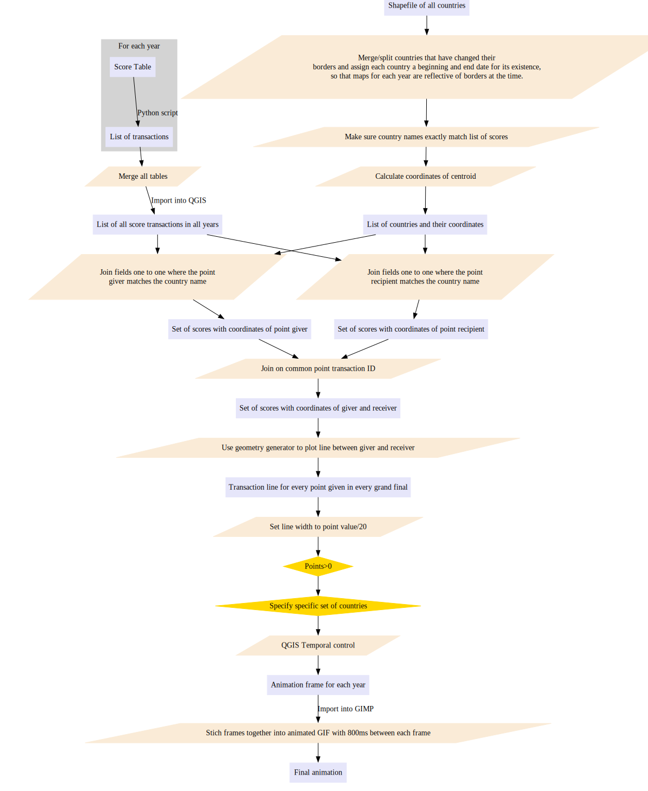
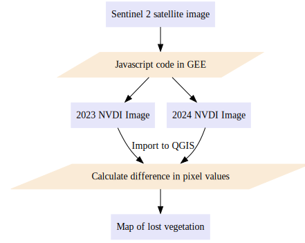

Geovisualisation Portfolio
Student number: 240190411
Part 1: Votes Given at the Eurovision Song Contest
Introduction
The Eurovision Song Contest has been running since 1956, and there are many sets of countries which very reliably do or do not vote for each other. Here, the voting scores for each year have been visualised geographically to gain an insight into the political alliances across Europe.
Ginsburgh, V. and Noury, A.G. (2008) investigated whether voting at Eurovision is political or cultural, and found several large blocs of countries, including Scandinavia and former members of Yugoslavia which can be relied upon to vote for each other.
Methodology
There is a vast amount of data regarding Eurovision statistics, and far too much to put into one visualisation, so the data has been filtered to the following constraints:
- Votes from the semi-finals and other rounds preceding the grand final are not included.
- Scores shown are for the jury vote only, as opposed to the public televote. This is due to the voting systems changing over time, which makes it difficult to separate out the televote before 2015.
- Since 58% of the scores are 'nul points', these have been filtered out of the visualisations.
The precise details of the geoprocessing are outlined in figure 1:

Figure 1: Methodology for mapping Eurovision votes
The scores were mined from the Wikipedia page for each contest (which cites the European Broadcasting Union as its source) and converted to a machine-readable list of point transactions using a Python script, as shown in the example in figure 2.
The Wikipedia page was used because the table is in a much more useful format for geoprocessing than the original source.
Figure 2: raw score table (Wikipedia (2024)) and processed score table for 2024
Visualisations
In all of these visualisations, the width of the line indicates the number of points given.
This is an animation of all the scores given in each year. It shows firstly, the enormous growth of the contest over 70 years from only a handful of countries, to spanning almost all of Europe.
It also shows how there are periods of extreme stability and periods of flux in who the votes are given to; it stays very stable for the whole of the 1960s, and moves very little until the mid 1970s. It starts to become more unstable after Russia joins, which coinciddes with the dissolution of the Soviet Union and the end of the cold war.
The voting patterns of countries that are former members of Yugoslavia show well how there are still strong political and cultural ties between countries that have split apart, even among those which have broken apart via unrest or civil war. The 'Balkan Triangle' emerges in 2004 as a pattern of internal voting among Balkan countries, which is very rarely broken. This supports the work of Ginsburgh, V. and Noury, A.G. (2008), but we find a weaker bond between the countries of Scandinavia; the internal voting between the Baltic countries begins as soon as they gain their independence from Yugoslavia, but the Scandinavian alliance takes much longer to take hold, and is much more fluid.
Other strong alliances include Greece and Cyprus.
The theoretical most important factor impacting Eurovision votes should be the quality of that country's song. The UK has done very poorly in Eurovision in recent years due to its poor musical contributions, and the animation shows how votes for the UK have almost completely evaporated by the 2010s.
A limitation of the animation for the whole of Europe is that it tends to predict the winner, rather than predicting political alliances. Filtering the data for a particular region is more telling of friendship or animosity, and this methodology is much better suited to showing the former, rather than the latter.


Figure 3: Animations of votes given between countries in each year. Heavier lines indicate more votes given.
Part 2: Using NVDI to Map War Damage in Gaza
Introduction
Gaza has seen massive amounts of destruction since the Hamas led attack on Israel on the 7th of October 2023.
Here, an attempt to map the damage from the conflict by using NVDI is presented.
Methodology
The basic methodology used is straightforward; a raster of the NVDI of Gaza was calculated in Google Earth Engine for the summers of 2023 and 2024, and then the difference between them was calculated to show how much vegetation had been lost in that time.
The code used to calculate the NVDI can be found here: https://code.earthengine.google.com/271bcf77d0a44ddb40dd8296a6806d8a
This approach to mapping the destruction from conflict works particularly well for Gaza for a number of reasons:
- Most of the vegetaion in Gaza is composed of scattered trees in a very dense urban environment. Because almost all the vetetation is part of the built environment, its loss can be considered a proxy for damage to the built environment. This makes this methodology unsuitable for use in areas with large amounts of natural vegetation or fields, like the east of Ukraine, for example.
- The conflict has also gone on for more than a year, which means that imagery from the same season can be compared in different years. This methodology cannot be used for Israel's October 2024 incursion in southern Lebanon at present, because two different seasons would be being compared.
- Gaza has seen massive conflict over a relatively small area (under 400km²) compared to other warzones, which lessens the computing power required and makes the visualisations easier to interpret.

Figure 4: Methodology to produce the NVDI maps
Results
Figure 5 shows the NVDI of Gaza in the summers of 2023 and 2024, and how vast areas of green infrastructure have been lost, particularly in the south of Gaza City.
The histograms show that in 2023, there were three peaks on the chart, but the peak at 0.2 has been flattened by 2024. The chart becomes more skewed to the right, and the mode value (approximately 0.1) and the negative values becomes more frequent.

Figure 5
Comparing these maps to the map in figure 6 from a BBC investigation shows that the areas with large amounts of vegetation loss do match up strongly with those identified as being damaged by other means.

Figure 6: Damage to Gaza as reported by BBC News (2024)
Implications
The NVDI has been used here as a proxy for damage to the built environment, but it is also important to consider the loss of NVDI as a problem in its own right. Holail et al. (2024) report that the amount of farmland (of which there is a small amount in Gaza) has reduced by 34% since the start of the conflict, which has implications for food security. The loss of vegetation will also impact the ecology of the region.
Part 3: Drug Seisures in the UK
A web atlas has been created to show which illegal drugs are dominant in different parts of the UK.
Methodology
A table was downloaded from the Home Office which contains the number of times a particular drug was seized in 2024, broken down by drug type and police force.
Figure 7: subset of the original data table (Home Office (2024))
This was joined with a shapefile from the Office for National Statistics to produce a Chloropeth map of the seizures for each drug, with a 5 classes of continuous colour scheme with Jenks natural breaks.
Because of the large amount of data, and large differences in the scale of the numbers, it was decided that an interactive webmap using the 'QGIS2Web' plugin (which can be found here: https://nathanojm.github.io/Drug-Atlas/) would be preferable over a static print map. This was to avoid a cluttered poster with legends of different scales on the same page.
A radio button over checkboxes in the legend would be an improvement, but this functionality is beyond the scope of the available software.

Figure 8: screenshot of the webmap showing the density of Cannabis seizures.
Results
It comes as no surprise that the vast majority of seizures were for Cannabis, which was by far the most seized drug in every police area. There was little point in including a map of the top seized drug, since every area was the same, but a map of the second most seized drugs is included, and shown in figure 9.
The second most seized drug is Cocaine in all places except Cleveland, Staffordshire and Hertfordshire where it is Morphine, and Bedfordshire and Humberside where it is Crack Cocaine.

Figure 9
One of the most interesting distributions is GHB, commonly used as a date rape drug as well as for recreational use (Abramowitz (2018)), which makes it a danger to the general public as well as those who choose to take it recreationally. Out of all the drugs studied, it is the most unevenly distributed.
This might be an indication of the main limitation of this methodology, that this dataset only includes the people who got caught - there will be many more drugs out there which were not seized. GHB is mainly used for drink spiking, of which it is estimated that 90% of incidents go unreported Drinkaware (2024).
The difference between Cocaine and Crack Cocaine is also striking. Areas with high levels of Powder Cocaine tend to be low in Crack Cocaine, suggesting that most places either have one or the other but not both. Djennad et al. (2024) have attempted to estimate and quantify the use of Cocaine and Crack Cocaine. The findings of this report do not match up exactly with those of Djennad et al., possibly due to differences in the resolution and scale of the data. Their data is per thousand people, for example. However, matching regions include Lancashire, Devon, Cornwall and parts of Humberside.


Figure 10: Distributions of different drugs
Implications
This data could be used by local authorities to help plan targeted addiction support services based on what drugs people are taking locally.
References
- Wikipedia (2024) Eurovision Song Contest 2024. Available at: https://en.wikipedia.org/wiki/Eurovision_Song_Contest_2024#Final_2 (Accessed: 20-01-2025)
- Ginsburgh, V. and Noury, A.G. (2008) 'The Eurovision Song Contest. Is voting political or cultural?', European Journal of Political Economy,24(1), pp. 41-52. https://doi.org/10.1016/j.ejpoleco.2007.05.004
- Home Office (2024) Seizures of drugs in England and Wales, financial year ending 2024. Available at: https://www.gov.uk/government/statistics/seizures-of-drugs-in-england-and-wales-financial-year-ending-2024 (Accessed: 18-01-2025)
- Office for National Statistics (2023) Police Force Areas. Available at: https://geoportal.statistics.gov.uk/datasets/06113f214e2348cab337c3437b5e38c9_0/explore (Accessed: 18-01-2025)
- BBC News (2024) At least half of Gazas buildings damaged or destroyed, new analysis shows. Available at: https://www.bbc.co.uk/news/world-middle-east-68006607 (Accessed: 19-01-2025)
- Holail, S. et al. (2024) 'Time-series satellite remote sensing reveals gradually increasing war damage in the Gaza Strip', National Science Review,11(9), pp. Unknown. https://doi.org/10.1093/nsr/nwae304
- Abramowitz, M.Z. (2018) 'GHB and date rape', The British Journal of Psychiatry,185(2), pp. 176-177. https://doi.org/10.1192/bjp.185.2.176
- Drinkaware (2024) Drink Spiking Report. pp. 3. Available at: https://www.drinkaware.co.uk/research/research-and-evaluation-reports/drink-spiking-report/ (Accessed: 20-01-2025)
- Djennad, A. et al. (2024) 'Estimating prevalence of opiate and crack cocaine use and injecting in England using mixed-effects capture–recapture models', Journal of the Royal Statistical Society Series A: Statistics in Society,118(1), pp. 68-83. https://doi.org/10.1093/jrsssa/qnae114
68/100
Visualisation 1:
THis is a nice animation of eurovsion votes. It demonstrates excellent data processing skills. It might have been helpful to also animate the base map to show the number of countries involved. YOu could also have thought about showing the votes cast between neighbours compared to not-neighbours; this might have empahisesed that more votes are cast locally. It also could have used greater exageration between line widths to emphasise the number of votes.
Visualisation 2:
This is a timely and well-presented map showing NDVI change in Gaza. Good use of labelling to highlight key locations. I would have plotted the NDVI graphs on the same axis to make the change more obvious; this would have allowed you to include an inset map to shw the wider geographical context. You should be clear about what images are used, are these composites? or for a particular day? and what satellite are they based on?.
VIsualisation 3:
This is an nice interactive map of drug seizures by the police. It demonstrates a lot of data processing work and shows some thoughtful analysis. It also considers some useful limitations ofthe analysis and links it to the wider context.
Grade justifiaction:
Three nice visualisation across different national contexts are presented. They include most required elements but it is important to include your data sources on the visualisations. You demonstrate excellent data processing and handling skills and have sourced a very interesting set of data. You need to make sure that you adhere to the requirements of the brief; I am accepting the sumission in html format but this could be seen as anattmept to avoid plagiarism detection tools. In future, unless specified when asked to submit a 'document' make sure it is in Word or pdf format.